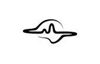
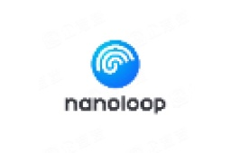

Wearable Biosignal Algorithm Engineer · M.Eng. Student
Building intelligent systems for wearable biosignals.
构建智能系统面向可穿戴生理信号。
I design and develop algorithms across the wearable biosignal pipeline—from EEG and fNIRS preprocessing to multimodal representation learning, physiological metrics, real-time inference, cross-platform SDKs, and report-ready products.
我负责可穿戴生理信号全链路的算法设计与开发——涵盖EEG 与 fNIRS 预处理、多模态表征学习、生理指标计算、实时推理、跨平台 SDK 与报告产品化。

YIBO XIONGBrain · AI · Systems
EEGelectrical
fNIRShemodynamic
AIrepresentation
ResearchEEG Foundation Models
ModalitiesEEG + fNIRS
EngineeringReal-time Systems
NEWS · WELCOME TO COLLABORATE
Welcome to collaborate on BCI research and projects.
If you are forming a BCI competition team, developing an open-source project, or exploring research or engineering collaboration in EEG/fNIRS, multimodal biosignals, deep learning, or wearable neurotechnology, feel free to contact me.
01
Research mindset.
Profile
Research mindset.
Engineering execution.
My work sits at the intersection of wearable biosignals, machine learning, and software systems. I focus on turning noisy, non-stationary physiological signals into reliable algorithms and deployable intelligent experiences.
I have worked across the complete BCI pipeline: experimental paradigms, multimodal acquisition, timestamp alignment, real-time preprocessing, feature engineering, deep learning, backend services, streaming visualization, and data management.
My work also connects algorithm development with real users: translating research, developer, and clinical-analysis needs into reusable platforms, cross-platform SDKs, interpretable metrics, and report workflows.
Wearable Biosignal Algorithms
Preprocessing, feature extraction, and robust modeling for EEG, fNIRS, ECG, PPG, and ACC signals.
Multimodal Physiological Computing
Temporal alignment and representation fusion across heterogeneous electrical, optical, and motion signals.
Deployable Intelligent Systems
Foundation models, streaming inference, SDK architecture, and practical wearable research products.
Algorithm delivery pipeline
From physiological signals
to usable product outcomes.
I work across the full chain, preserving algorithm rigor while shaping each capability for researchers, application developers, and analysis workflows.
SELECTED STAGE · 01
Evidence: research platform · emotion experiment platform
Multimodal acquisition and alignment
Synchronize EEG, fNIRS, behavioral events, and stimulus markers through unified timestamps and offset compensation, creating a dependable input for downstream analysis.
RESEARCHERSUnified experiments & reproducible analysis
DEVELOPERSStable APIs & cross-platform reuse
ANALYSIS TEAMSInterpretable metrics & report workflows
02
From lab signals to
Experience
From lab signals to
real-time products.
JAN 2026 — SEP 2026
Algorithm Engineer

Hangzhou Rongnao Technology Co., Ltd.Incubated by Zhejiang University's State Key Laboratory of Brain-Machine Intelligence · Ranked No. 6 among China's most promising BCI companies
Developed EEG, fNIRS, and multimodal biosignal algorithms spanning preprocessing, neural rhythms, hemodynamics, HRV, neurovascular coupling, deep learning, and product integration.
- Translated research, developer, and clinical-analysis workflows into a multimodal research platform, cross-platform SDK, and interpretable report features.
- Designed EEG/fNIRS preprocessing, cross-rate timestamp alignment, quality checks, and multimodal deep-learning models for cognitive-load and sleep-state prediction.
- Designed EEG spectral, fNIRS hemodynamic, HRV, and EEG-fNIRS coupling metrics, then connected them to visualization and report workflows.
- Delivered reusable Windows and Android algorithm interfaces and supported validation for hospital-oriented brain-function analysis scenarios.
PythonPyTorchEEG/fNIRSC/C++GoAndroid NDK
SEP 2024 — MAR 2025
Algorithm Engineer

Beijing Naohuilu Technology Co., Ltd.Incubated by a brain-computer interface laboratory at Tsinghua University
Built a motion-BCI emotion experiment and quantitative-visualization platform, connecting experimental paradigms, synchronized EEG, lightweight deep learning, and real-time display.
- Developed emotion-induction paradigms and synchronized EEG, behavioral markers, and stimulus events through Python and LSL.
- Designed adaptive online filtering to suppress ocular and muscular artifacts during motion-oriented experiments.
- Engineered differential entropy, band-power, and alpha-lateralization features and designed a lightweight deep-learning classifier.
- Delivered an experiment and visualization prototype validated with participant sessions and real-time headband inference.
PythonLSLEEGDeep LearningReal-time InferenceVisualization
03
Systems built around
Selected Projects
Systems built around
real-world biosignals.
01
Developer enablement · 2026
Cross-Platform Physiological Signal Algorithm SDK
Designed a layered SDK and packaged EEG/fNIRS preprocessing, spectral analysis, sliding windows, physiological metrics, and signal-quality capabilities into reusable Windows and Android interfaces for application developers.
Signal pipelinesEEG · fNIRS · HR/HRV
Target platformsWindows · Android
Native integrationFFI · JNI · NDK
DeliverablesSDK · DLL · AAR
Unified input/output contracts, validation, error handling, and lifecycle behavior
Reduced repeated wrapping and cross-platform adaptation for downstream developers
C/C++TypeScript/Node.jsJava/KotlinAndroid NDKDLLAAR
02
Research workflow · 2026
EEG-fNIRS Multimodal Cognitive State Research Platform
Translated researchers' acquisition, experiment-management, and result-viewing needs into a unified platform for synchronized multimodal acquisition, preprocessing, deep-learning inference, and cognitive-load or sleep-state prediction.
Timestamp alignment, filtering, segmentation, baseline correction, and quality checks
EEG-fNIRS feature fusion and deep-learning model integration
Go/Gin/GORM services with Vue and ECharts visualization
INPUTSynchronized multimodal data
ALGORITHMState prediction pipeline
OUTCOMEReusable research workflow
03
Motion BCI · Research prototype
Motion-BCI Emotion Experiment & Quantification Platform
Built emotion-induction paradigms and synchronized EEG, behavioral markers, and stimulus events through Python and LSL. Designed adaptive online filtering, interpretable features, a lightweight classifier, and real-time visual quantification.
Participant-session validation
Real-time inference on an EEG headband
DELIVEREDExperiment-to-visualization prototype
04
Clinical-analysis workflow · 2026
EEG-fNIRS Multimodal Medical Assistive Analysis Platform
Designed EEG/fNIRS preprocessing and multimodal indicator algorithms, translating brain-function analysis requirements into interpretable metrics, visual summaries, reference rules, and report-ready findings.
EEG band power, PAF, and FAA
fNIRS HbO/HbR/HbT and VFT indicators
HRV and cross-correlation coupling metrics
EEG METRICS
Quantifies neural rhythms, peak alpha frequency, and frontal alpha asymmetry for interpretable brain-function summaries.
PRODUCT LOOPPreprocessing → metrics → rules → interpretable report
04
Publication, patent,
Publication & Patent
Publication, patent,
and technical depth.
 OPEN PAPER ↗
OPEN PAPER ↗
FIRST-AUTHOR PAPER · 2026Biomedical Signal Processing and Control · IF 5.7
CT-MIFNet: Convolutional transformer-based multi-view interaction and fusion network for EEG decoding
CT-MIFNet combines spatial transformation, multi-scale temporal–frequency–spatial convolution, and Transformer-based feature interaction. Its Cross-Covariance Attention mechanism supports efficient exchange and fusion of multi-view EEG representations.
Granted Chinese invention patent
EEG-Based Emotion Recognition Result Visualization Method and System
Patent No. ZL 2025 1 0102267.X · Grant No. CN 119818070 B · Granted September 16, 2025.
Technical Stack
Built across algorithms, signals, and systems.
Programming
Python · Go · C++ · C · Java · MATLAB
Machine Learning
PyTorch · scikit-learn · Classical ML · Deep Learning
Biosignals
EEG · fNIRS · ECG · PPG · ACC · MNE · NeuroKit2 · EEGLAB · Homer3 · LSL
Signal Processing
Filtering · Resampling · Segmentation · Normalization · Basic Artifact Handling
SDK Engineering
C/C++ · TypeScript/Node.js · Java/Kotlin · Android NDK · FFI/JNI · DLL · AAR
Systems
Go · Gin · GORM · Vue 3 · React · MySQL · WebSocket · ECharts
05
A software foundation
Education & Recognition
A software foundation
moving into neurotechnology.

2026 — 2029
M.Eng. student · Double First-Class · THE Top 100
University of Chinese Academy of Sciences
Master of Engineering in Computer Technology
Enrolled September 2026
2022 — 2026
Top 30% of major
Jiangxi Agricultural University
Bachelor of Engineering in Software Engineering
Coursework: Data Structures & Algorithms, Machine Learning, Artificial Intelligence, Computer Networks, and Computer Organization.Awards
- 01
Provincial Second Prize, Lanqiao Cup Algorithm Competition
- 02
Two First-Class and two Third-Class University Scholarships
- 03
Bronze Award, 5th National College Student Algorithm Design and Programming Challenge, 2024
- 04
Third Prize, First College Student Algorithm Competition, 2023
- 05
Third Prize, World Robot Contest — BCI Metaverse and ECoG Tracks
CET-4
CET-6
Let’s connect
Working on the next generation of wearable intelligence?
I am interested in wearable biosignal algorithms, multimodal physiological computing, neurotechnology engineering, BCI competitions, open-source development, and interdisciplinary research or project collaboration.